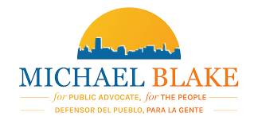

Projects
Fellowship With Michael Blake For Public Advocate


On my Fellowship with Michael Blake For Public Advocate, I took on the role of aiding the Manhattan Borough Director Sophia Lajaunie on phone banks and Distribution of flyers. During the weeks of the election, I would have invited classmates to go out on 161st and distribute flyers to people leaving the 4 Train, or head over to the Blake office in 125th St. In Harlem and make calls. The last week of the election, I was at the public advocate last debate hosted by Al Sharpton. In total, I did 100 hours of service, 726 calls and recruited 10 people to volunteer.